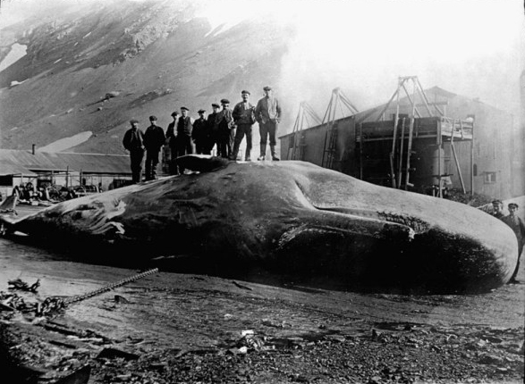
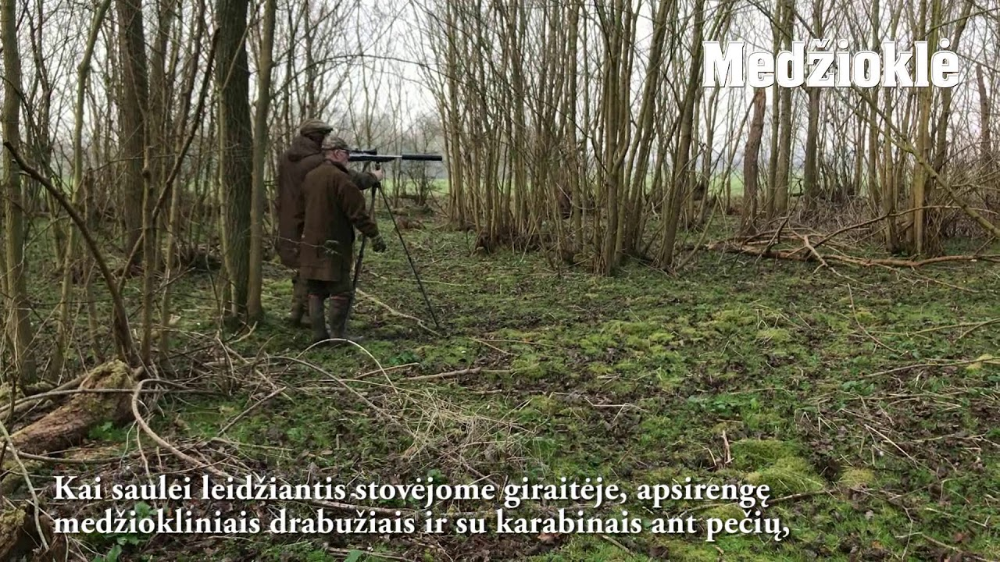
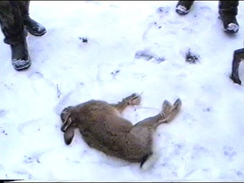

Ančių Medžioklė - Kur pavalgyti? Maisto apžvalgos, kritika ir rekomendacijos
2020.10.29 07:08
Kur pavalgyti? Maisto apžvalgos, kritika ir rekomendacijos
Pradžia Miestai Vilnius Antakalnis Žirmūnai Fabijoniškės Užupis Kalnėnai Kaunas Klaipėda Palanga Nida Druskininkai Trakai Šiauliai Anykščiai Joniškis Pakruojis Molėtai Berlynas Londonas Burgerių apžvalgos Picų Apžvalgos Kitos apžvalgos Receptai MenuKitas maistas , Receptai
2020-04-21 Komentarų: 0
Loaded Fries nepadorūs pusryčiai
Continue ReadingPicos , Uncategorized
2020-04-21 Komentarų: 0 Continue Reading
Uncategorized
BBQ gatvės mūšis kas ten vyko
2019-05-14 Komentarų: 0Kažkaip pagalvojau, kad reikėtų prisiminti praėjusį šeštadienį praūžusią We Will Grill fiestą. Ne kasdien tenka sudalyvauti tokiame renginyje, o dar ir ne kaip paprastam mirtingajam, bet užimti garbingą BBQ gatvės kovų teisėjo/vertintojo vietą.
Iki šiol nežinau kodėl nusipelniau būti tarp garbingos komisijos narių, bet pasakysiu atvirai – tai buvo žiauriai įdomi ir vertinga patirtis! Ta prasme rimtai, tu gauni nemokamai maisto ir purvinais nuo šonkauliukų pirštais rašinėji ba lus ant balto popieriaus lapo – kas gali būti smagesnio?
Continue Reading
Kitas maistas
Vila Komoda: stebuklinga vieta
2019-05-02 Komentarų: 0Nuo mini atostogų Palangoje praėjo jau daugiau nei savaitė. Ir nors mano lankytų bei dar neaprašytų vietų sąrašas pastoviai ilgėja, bet vieną iš jų privalau „prastumti“ į sąrašo pradžią.
Ne paslaptis (tiems kas seka mane Instagram‘e), kad tai yra Vila Komoda restoranas ir jo šefas – Martynas Meidus.
Continue Reading
Kitas maistas
MEMO Kebabai: Nr. 1 Lietuvoje ir Pasaulyje
2019-03-28 Komentarų: 0Praėjusį penktadienį su dideliu nekantrumu laukiau Europos futbolo čempionato atrankos ciklo pradžios bei naujojo rinktinės trenerio debiuto. Kažkoks kvailas naivumas kuždėjo, kad šį kartą kažkas pasikeis ir mes stebuklingai imsime laimėti ar bent pradėsime žaisti futbolą (žaidėme su Lichtenšteinu).
Sulaukiau. Žiūrėjau. Liūdėjau. Po varžybų mano nuotaiką geriausiai atspindėjo autoritetingiausio LT Ultraso „Storo“, parašytas postas: „Liuksemburge mačiau moterą vidury baltos dienos vidury miesto besišvirkščiančią narkotikus į lytinius organus. Buvau šokiruotas vaizdo šlykštumo ir galvojau, kad bjauriau jau nieko būt negali.. Bet vakare pamačiau Lietuvos rinktinės rungtynes “.
Todėl šeštadienį reikėjo kažko gero. Kažko stipraus ir pozityvaus, kad atgaučiau tikėjimą gėriu ir prisiminčiau kas per vienas yra tas optimizmas.
Ryte susiradau rekomendacijų sąrašą. Jame ryškiausiai žibėjo ne vieno Ančių Medžioklės kompetentingo sekėjo paminėta vieta Memo Kebabine .
Continue Reading 1 2 3 … 34 Kitas
Naujausi įrašai
BBQ gatvės mūšis kas ten vyko Vila Komoda: stebuklinga vieta MEMO Kebabai: Nr. 1 Lietuvoje ir PasaulyjeKategorijos
Burgeriai Kitas maistas Naminės Anties Mintys Picos Receptai UncategorizedSenesni įrašai
Senesni įrašai Pasirinkite mėnesį 2020 m. balandžio mėn. (2) 2019 m. gegužės mėn. (2) 2019 m. kovo mėn. (2) 2019 m. vasario mėn. (2) 2019 m. sausio mėn. (1) 2018 m. gruodžio mėn. (2) 2018 m. lapkričio mėn. (4) 2018 m. spalio mėn. (5) 2018 m. rugsėjo mėn. (3) 2018 m. rugpjūčio mėn. (1) 2018 m. liepos mėn. (2) 2018 m. birželio mėn. (2) 2018 m. gegužės mėn. (5) 2018 m. balandžio mėn. (4) 2018 m. kovo mėn. (2) 2018 m. vasario mėn. (2) 2018 m. sausio mėn. (4) 2017 m. gruodžio mėn. (2) 2017 m. lapkričio mėn. (4) 2017 m. spalio mėn. (4) 2017 m. rugsėjo mėn. (3) 2017 m. rugpjūčio mėn. (4) 2017 m. liepos mėn. (7) 2017 m. birželio mėn. (6) 2017 m. gegužės mėn. (6) 2017 m. balandžio mėn. (6) 2017 m. kovo mėn. (3) 2017 m. vasario mėn. (7) 2017 m. sausio mėn. (7) 2016 m. gruodžio mėn. (7) 2016 m. lapkričio mėn. (6) 2016 m. spalio mėn. (6) 2016 m. rugsėjo mėn. (3) 2016 m. rugpjūčio mėn. (6) 2016 m. liepos mėn. (5) 2016 m. birželio mėn. (3) 2016 m. gegužės mėn. (6) 2016 m. balandžio mėn. (7) 2016 m. kovo mėn. (3) 2016 m. vasario mėn. (9) 2016 m. sausio mėn. (5)Ančių Medžioklė
Plugins Wordpress Themes Wordpress Documents Wordpress- Superkompaktiškas termovizorius AXION | Medžioklė
- Ančių Medžioklė - Kur pavalgyti? Maisto apžvalgos, kritika ...
- Filmai internetu, filmai online, nemokami filmai
- Medžioklė / The Hunt (2020) online
- Medžioklė - Ūkininko patarėjas
- Prasideda akcija „Medžioklė“ | Miske.lt
- Medžioklė / The Hunt 2020 online lietuvių kalba
- Medžioklė / The Hunt (2020) » Filmai ir serialai online ...
- Medžioklė - vertimai, sinonimai, gramatika, statistika ...
- Žiūrėti Raudonojo Spalio Medžioklė Online nemokamai
- Superkompaktiškas termovizorius AXION | Medžioklė
Medžioklė / The Hunt (2012) BDRip. Kraujas ir šokoladas. Dramos, Romantiniai, Fantastiniai, Siaubo, Filmai. 2007. 1 val 38 min. Kraujas ir šokoladas / Blood and Chocolate (2007) DVDRip.
- Ančių Medžioklė - Kur pavalgyti? Maisto apžvalgos, kritika ...
GERAS FILMAS Medžioklė / The Hunt 2020 online lietuvių kalba nemokamai HD kokybė. Žiūrėkite naujausią filmą NEMOKAMAI. Vienas žiurimiausių filmų Lietuvoje.
- Filmai internetu, filmai online, nemokami filmai
Gero termovizoriaus reikėtų kiekvienam medžiotojui, norinčiam medžioti ne tik sėkmingai, bet ir etiškai. Jis padeda prieš šūvį įsitikinti, ar prie viliojimo vietos priėjusios šernės aukštoje žolėje neseka jaunikliai, kiek apskritai bandoje šernų, kuris didesnis, kuris mažesnis. Su Axion gyvūną galima įžiūrėti ir per gana tankius krūmus, tad galima pasirengti jo ...
- Medžioklė / The Hunt (2020) online
Filmas sukurtas pagal 1984 m. JAV išleistą (ir išverstą į lietuvių kalbą) Tomo Clancy knygą „Raudonojo spalio“ medžioklė“, kuri tapo bestseleriu. Romanas ir filmas sukurti pagal tikrus įvykius.
- Medžioklė - Ūkininko patarėjas
Ančių Medžioklė - maisto apžvalgos, vertinimai ir rekomendacijos. Kažkaip pagalvojau, kad reikėtų prisiminti praėjusį šeštadienį praūžusią We Will Grill fiestą.
- Prasideda akcija „Medžioklė“ | Miske.lt
Prasideda akcija „Medžioklė“ Vakar Aplinkos apsaugos departamentas tauriųjų elnių ir briedžių apsaugai stiprinti intensyviausiu jų rujos metu pradėjo akciją „Medžioklė“. Mat rujodami šie žvėrys įnirtingai ieško naujų teritorijų, patelių, varžovų, todėl nėra tokie budrūs ir gali tapti lengvu brakonierių grobiu.
- Medžioklė / The Hunt 2020 online lietuvių kalba
Miske.lt naujienos medžiotojams, straipsniai apie medžioklę, medžioklės vaizdo įrašai, medžioklės kalendorius, medžioklės įstatymai ir komentarai.
- Medžioklė / The Hunt (2020) » Filmai ir serialai online ...
Vaizdo įrašas pilno filmo "Medžioklė (2020)" įsijungia geroje kokybėje FULL HD 720 ir 1080 nemokamai, be registracijos. Žiūrėti Treileris. Filmas prasidės po trumpos reklamos * Brangūs lankytojai, reklama leistuve nuo mūsų nepriklauso. Atsiprašome...
- Medžioklė - vertimai, sinonimai, gramatika, statistika ...
Filmai internetu ir filmai online. Naujausi serialai, parduotas gyvenimas online, suzeisti pauksciai online
- Žiūrėti Raudonojo Spalio Medžioklė Online nemokamai
Medžioklės reikmenys medžioklė, žvejyba. X. Dėl geresnės Skelbiu.lt paslaugų kokybės naudojame slapukus (angl. cookies). Naršydami toliau, patvirtinate, kad sutinkate su slapukais. Tai bet kada galėsite atšaukti, pakeisdami nustatymus. Skelbiu.lt slapukų politika.
Medžioklė / The Hunt (2012) BDRip. Kraujas ir šokoladas. Dramos, Romantiniai, Fantastiniai, Siaubo, Filmai. 2007. 1 val 38 min. Kraujas ir šokoladas / Blood and Chocolate (2007) DVDRip.
GERAS FILMAS Medžioklė / The Hunt 2020 online lietuvių kalba nemokamai HD kokybė. Žiūrėkite naujausią filmą NEMOKAMAI. Vienas žiurimiausių filmų Lietuvoje.
Gero termovizoriaus reikėtų kiekvienam medžiotojui, norinčiam medžioti ne tik sėkmingai, bet ir etiškai. Jis padeda prieš šūvį įsitikinti, ar prie viliojimo vietos priėjusios šernės aukštoje žolėje neseka jaunikliai, kiek apskritai bandoje šernų, kuris didesnis, kuris mažesnis. Su Axion gyvūną galima įžiūrėti ir per gana tankius krūmus, tad galima pasirengti jo ...
Filmas sukurtas pagal 1984 m. JAV išleistą (ir išverstą į lietuvių kalbą) Tomo Clancy knygą „Raudonojo spalio“ medžioklė“, kuri tapo bestseleriu. Romanas ir filmas sukurti pagal tikrus įvykius.
Ančių Medžioklė - maisto apžvalgos, vertinimai ir rekomendacijos. Kažkaip pagalvojau, kad reikėtų prisiminti praėjusį šeštadienį praūžusią We Will Grill fiestą.
Prasideda akcija „Medžioklė“ Vakar Aplinkos apsaugos departamentas tauriųjų elnių ir briedžių apsaugai stiprinti intensyviausiu jų rujos metu pradėjo akciją „Medžioklė“. Mat rujodami šie žvėrys įnirtingai ieško naujų teritorijų, patelių, varžovų, todėl nėra tokie budrūs ir gali tapti lengvu brakonierių grobiu.
Miske.lt naujienos medžiotojams, straipsniai apie medžioklę, medžioklės vaizdo įrašai, medžioklės kalendorius, medžioklės įstatymai ir komentarai.
Vaizdo įrašas pilno filmo "Medžioklė (2020)" įsijungia geroje kokybėje FULL HD 720 ir 1080 nemokamai, be registracijos. Žiūrėti Treileris. Filmas prasidės po trumpos reklamos * Brangūs lankytojai, reklama leistuve nuo mūsų nepriklauso. Atsiprašome...
Filmai internetu ir filmai online. Naujausi serialai, parduotas gyvenimas online, suzeisti pauksciai online
Medžioklės reikmenys medžioklė, žvejyba. X. Dėl geresnės Skelbiu.lt paslaugų kokybės naudojame slapukus (angl. cookies). Naršydami toliau, patvirtinate, kad sutinkate su slapukais. Tai bet kada galėsite atšaukti, pakeisdami nustatymus. Skelbiu.lt slapukų politika.
  